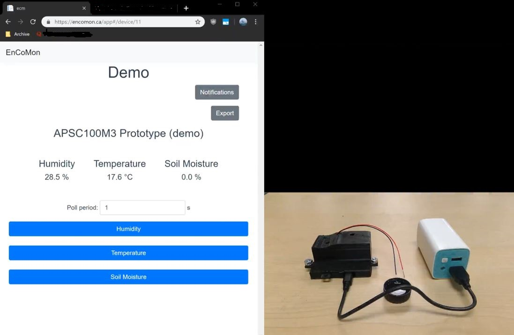
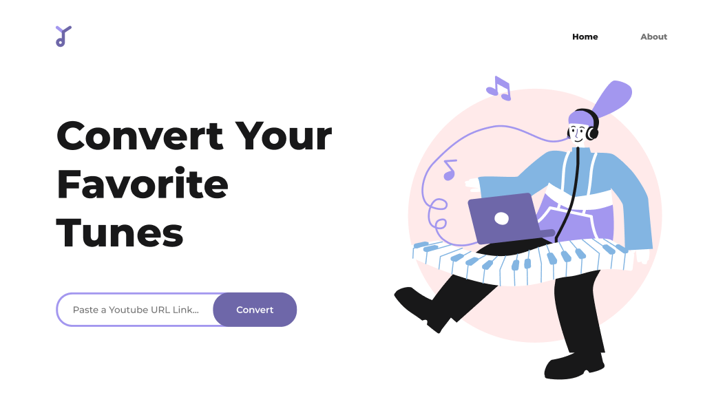
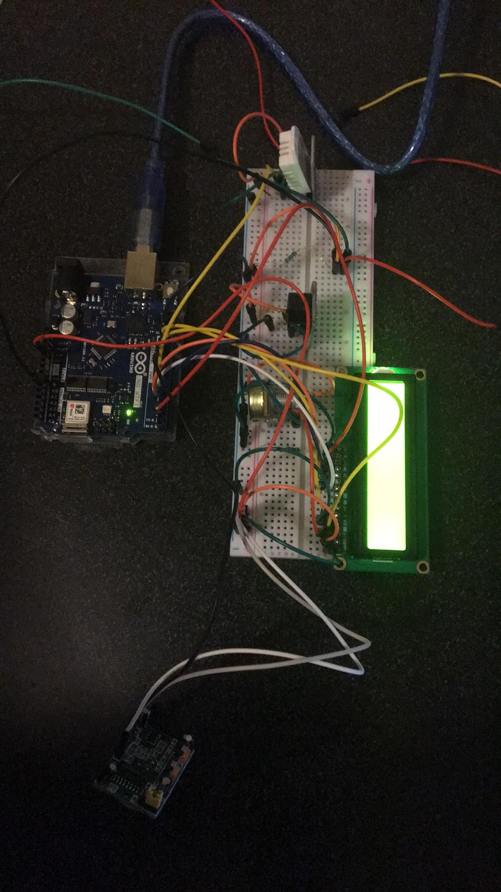

Showcased Work
Click an image to view project details.
Due to the recent effects of generative AI, my projects will cease to be open source, and will remain closed until further notice. AI slop has shown itself to be more consequential to society than beneficial. Clean freshwater and energy are all under increased scarcity driven by the reckless adoption of AI. There lacks regulation and legislation for big companies to use guard rails in responsible AI that protects the environment and the economic wellbeing of young persons like myself. For these reasons, rather than letting bot scrapers use my portfolio to train their slop machines, all repos and work samples will be closed and only be available upon request.

